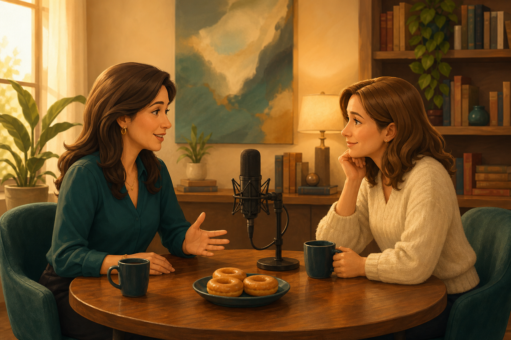

Turn the Page Thursday
Therapy Should Not Feel Like a Mystery
On Donuts and Divorce, Dorothy talks with Dr. Allyson Casey-Jovanovich about child therapy during family change.
Kids rely on routine when one home becomes two.
Big feelings are allowed, even when words are hard.
A calm conversation can help you decide if support fits.
Listen to Donuts and Divorce, episode 58.